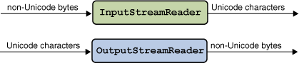
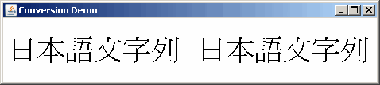

Thejava.iopackage provides classes that allow you to convert between Unicode character streams and byte streams of non-Unicode text. With theInputStreamReaderclass, you can convert byte streams to character streams. You use theOutputStreamWriterclass to translate character streams into byte streams. The following figure illustrates the conversion process: When you create
InputStreamReaderandOutputStreamWriterobjects, you specify the byte encoding that you want to convert. For example, to translate a text file in the UTF-8 encoding into Unicode, you create anInputStreamReaderas follows:FileInputStream fis = new FileInputStream("test.txt"); InputStreamReader isr = new InputStreamReader(fis, "UTF8");If you omit the encoding identifier,
InputStreamReaderandOutputStreamWriterrely on the default encoding. You can determine which encoding anInputStreamReaderorOutputStreamWriteruses by invoking thegetEncodingmethod, as follows:InputStreamReader defaultReader = new InputStreamReader(fis); String defaultEncoding = defaultReader.getEncoding();The example that follows shows you how to perform character-set conversions with the
InputStreamReaderandOutputStreamWriterclasses. The full source code for this example is inStreamConverter.java. This program displays Japanese characters. Before trying it out, verify that the appropriate fonts have been installed on your system. If you are using the JDK software that is compatible with version 1.1, make a copy of thefont.propertiesfile and then replace it with thefont.properties.jafile.The
StreamConverterprogram converts a sequence of Unicode characters from aStringobject into aFileOutputStreamof bytes encoded in UTF-8. The method that performs the conversion is calledwriteOutput:static void writeOutput(String str) { try { FileOutputStream fos = new FileOutputStream("test.txt"); Writer out = new OutputStreamWriter(fos, "UTF8"); out.write(str); out.close(); } catch (IOException e) { e.printStackTrace(); } }The
readInputmethod reads the bytes encoded in UTF-8 from the file created by thewriteOutputmethod. AnInputStreamReaderobject converts the bytes from UTF-8 into Unicode and returns the result in aString. ThereadInputmethod is as follows:static String readInput() { StringBuffer buffer = new StringBuffer(); try { FileInputStream fis = new FileInputStream("test.txt"); InputStreamReader isr = new InputStreamReader(fis, "UTF8"); Reader in = new BufferedReader(isr); int ch; while ((ch = in.read()) > -1) { buffer.append((char)ch); } in.close(); return buffer.toString(); } catch (IOException e) { e.printStackTrace(); return null; } }The
mainmethod of theStreamConverterprogram invokes thewriteOutputmethod to create a file of bytes encoded in UTF-8. ThereadInputmethod reads the same file, converting the bytes back into Unicode. Here is the source code for themainmethod:public static void main(String[] args) { String jaString = new String("\u65e5\u672c\u8a9e\u6587\u5b57\u5217"); writeOutput(jaString); String inputString = readInput(); String displayString = jaString + " " + inputString; new ShowString(displayString, "Conversion Demo"); }The original string (
jaString) should be identical to the newly created string (inputString). To show that the two strings are the same, the program concatenates them and displays them with aShowStringobject. TheShowStringclass displays a string with theGraphics.drawStringmethod. The source code for this class is inShowString.java. When theStreamConverterprogram instantiatesShowString, the following window appears. The repetition of the characters displayed verifies that the two strings are identical: